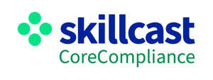

Trade Mark Journal No.2025/027 4 July 2025
UK00004217384 11 June 2025 (9,35,38,41,42)

- Class 9
- Teaching apparatus and instruments; computer programs and computer software utilising artificial intelligence to support the providing of training, teaching, tuition and instruction; computer programs and computer software utilising artificial intelligence to support compliance and certification activities; business compliance software; business management software; electronic publications provided on-line from a computer database or from a global computer network; downloadable publications relating to policies and documentation in the field of business compliance; downloadable publications relating to business management training; customisable downloadable publications relating to business management and compliance; audio and video recordings relating to business compliance; apparatus for recording, transmitting and/or reproducing sound and/or video images; electronic diaries; parts and fittings for all the aforesaid goods.
- Class 35
- Advertising; business compliance management; business administration in the field of compliance; advertising services provided via the Internet; production of television, internet and radio advertisements; data processing in the field of business compliance; provision of business information in the field of business management development and compliance; provision of information relating to compliance in recruitment, personnel, skills, careers and business management; advertising and promotional services in relation to the provision of business management and compliance training services; provision of human resources management systems; provision of human resources training management systems.
- Class 38
- Telecommunications services; chat room services; portal services relating to business management and compliance systems; e-mail services; internet broadcasting; providing user access to cloud based educational and training systems; providing user access to cloud-based business management and compliance training systems.
- Class 41
- Education; training relating to business management and compliance; education and training activities in relation to compliance and consultancy in relation thereof; certification relating to participation in education and training activities in relation to compliance and consultancy in relation thereof; providing of training, teaching, tuition and instruction; management training services; business, commercial and industrial training services; provision of training facilities; providing of training, teaching, tuition and instruction by means of artificial intelligence; arranging and conducting training sessions; information, consultancy and advisory services relating to all the aforesaid services; provision of on-line electronic publications; education and training services relating to regulatory compliance and information handling systems; organisation of training courses; organising and providing computer based training; vocational skills training and testing; provision of education in the field of professional development; training people for regulated services sector; provision of residential courses; organisation of competitions, events, exhibitions, symposia, seminars, concerts, arranging and conducting of workshops; provision of information for educational purposes; publishing in the field of business management and compliance; education and training services with regard to regulatory compliance by means of artificial intelligence; the provision of education and training including on-line educational services in the field of legal and regulatory compliance; awarding qualifications; awarding and maintaining certification of individuals and organisations; providing computer-based systems for the management of training, compliance and certification activities; providing training courses relating business management and compliance software as a service (SAAS).
- Class 42
- Providing business compliance software as a service (SAAS); providing online non-downloadable software for the artificial production of human speech and text to support compliance and certification activities; providing online non-downloadable software for natural language processing, generation, understanding and analysis to support compliance and certification activities; providing online non-downloadable software for natural language processing, generation, understanding and analysis in support of providing of training, teaching, tuition and instruction; providing online non-downloadable software for the artificial production of human speech and text in support of providing of training, teaching, tuition and instruction; providing data processing software in support of providing of training, teaching, tuition and instruction; Software as a service utilising artificial intelligence in the providing of training, teaching, tuition and instruction; providing online non-downloadable software for machine-learning based language and speech processing software; providing online non-downloadable chatbot software for simulating conversations; providing online non-downloadable software for natural language processing, generation, understanding and analysis provided as a service; research and development services in the field of artificial intelligence; research, design and development of bespoke software as a service in the field of business management and compliance; electronic data storage.
SKILLCAST GROUP PLC
Representative: Mitchiners